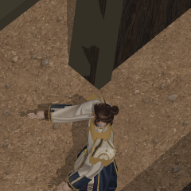
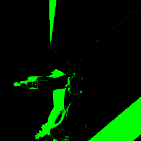

Godot shipping target; Pixi test harness. E07C remains the working chamber. Raw lookup passes all 1,302 available samples. Corrected lookup retains two failures. Full lighting/style is unqualified.
Doubling map density clears the raw lookup failures. Receiver-plane correction still fails the same fresh 3× shoulder-armor location in both factions; no numerical tolerance changed.


Each crop is240×240physical pixels, without image enlargement. The failing pixel is[120,120]within it. Black surroundings are diagnostic background.
Next E07J installs the selected raw mode in neutral policy and tests actual interactions. The corrected-mode failure remains preserved. Report · Preserved E07G control